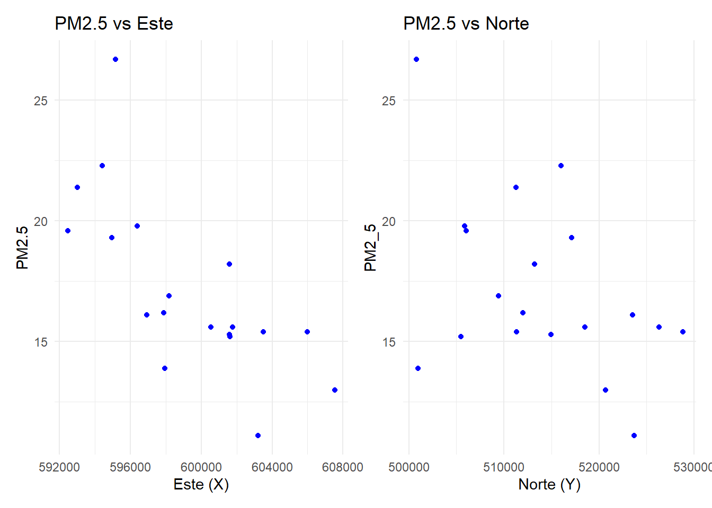
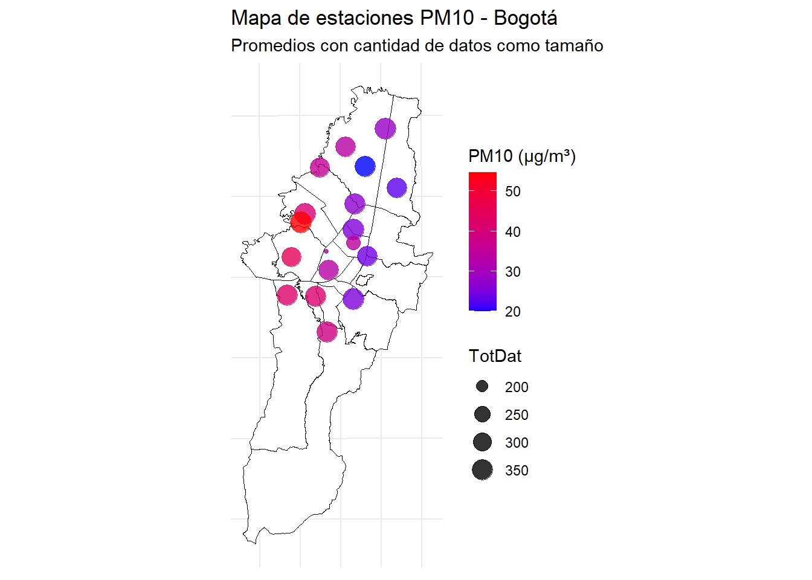
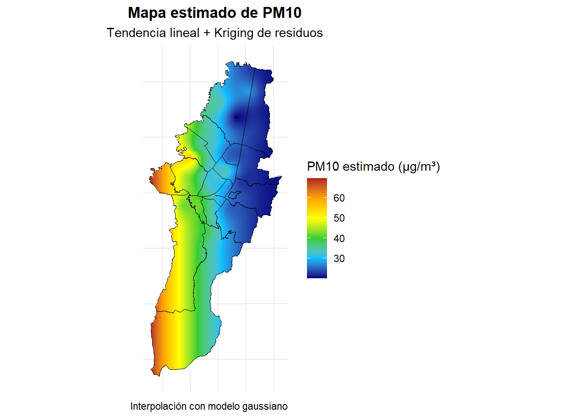

Análisis espacial de la concentración de PM2.5 y PM10 en estaciones de monitoreo de calidad del aire en Bogotá
Planteamiento del problema
La contaminación del aire es uno de los principales problemas ambientales que afectan la salud pública, especialmente en las ciudades. En Bogotá, el seguimiento de contaminantes como el PM2.5 y el PM10 se hace por medio de estaciones distribuidas por toda la ciudad. Aun así, todavía hay muchas cosas que no se entienden del todo bien sobre cómo se comportan estos contaminantes en el espacio y el tiempo. Analizar esos patrones puede ser útil para plantear políticas ambientales más efectivas y mejor enfocadas.
Objetivos
Objetivo general
Analizar la distribución espacio-temporal de los contaminantes PM2.5 y PM10 en Bogotá utilizando los datos provenientes de las estaciones de monitoreo del IDEAM.
Objetivos específicos
Observar cómo se distribuyen las concentraciones promedio de PM2.5 y PM10 en diferentes partes del país.
Identificar zonas con mayores concentraciones y posibles focos de contaminación.
Examinar cómo la ubicación geográfica podría influir en los niveles de PM2.5 y PM10.
Resultados esperados
Mapas temáticos que ilustren la distribución espacial de PM2.5 y PM10 en Colombia.
Modelos de regresión que nos permitan determinar si existe una relación significativa entre las concentraciones de los contaminantes y su ubicación geográfica.
Posibles clusters o áreas críticas donde se exceden los límites permisibles.
Variables
Variables de interés (dependientes)
PM2.5: está compuesto por partículas con un diámetro aerodinámico igual o menor a 2.5 micrómetros. Su origen principal es la combustión de vehículos, industrias y quema de biomasa. Contiene sustancias como sulfatos, nitratos, metales pesados y carbono negro. Estas partículas pueden penetrar profundamente en los pulmones y pasar al torrente sanguíneo, provocando enfermedades respiratorias, cardiovasculares e incluso efectos neurológicos. Además, contribuyen a la formación de smog y disminución de visibilidad. Se mide en microgramos por metro cúbico \((\mu g/m^3)\) y la OMS establece límites estrictos por su alta peligrosidad.
PM10: incluye todas las partículas con un diámetro igual o menor a 10 micrómetros, por lo que abarca también el PM2.5. Su composición incluye polvo, polen, moho, cenizas y partículas de combustión. Proviene de fuentes naturales (como el polvo del suelo) y antrópicas (construcciones, vehículos). Aunque sus partículas son más grandes, pueden alojarse en las vías respiratorias superiores y causar irritación, tos o crisis asmáticas. También afectan la calidad del aire, deterioran estructuras y ecosistemas. Al igual que el PM2.5, se mide en \((\mu g/m^3)\) y es regulado por organismos de salud y medio ambiente.
Variables explicativas (independientes)
Coordenadas (este y norte en metros) de las estaciones.
Año (dimensión temporal).
Análisis inicial de PM2.5
ANÁLISIS ESPACIAL DEL PM2.5
Este análisis se centra en el año 2022, periodo durante el cual se calcularon los promedios anuales de PM2.5 para cada estación de monitoreo en la ciudad de Bogotá. En total, se dispone de 20 estaciones, cada una proporcionando un valor representativo del promedio anual del contaminante, con base en observaciones diarias acumuladas durante el año.
Sin embargo, se identificó que la estación Carvajal–Sevillana presentó una representatividad temporal extremadamente baja, cercana al 16%, debido a que solo se registraron alrededor de 60 observaciones válidas en todo el año. En contraste, otras estaciones superaron las 220 observaciones, manteniendo representatividades superiores al 75%.
De acuerdo con el Informe Anual de Calidad del Aire de Bogotá 2022, esta deficiencia se debió a una serie de inconvenientes técnicos y logísticos. Durante los primeros meses del año (enero a mayo), no fue posible acceder a la estación por falta de permisos, lo que impidió el reemplazo oportuno de la cinta filtro y provocó fallas en los equipos de medición de diversos contaminantes. Posteriormente, en julio se detectaron fallas en el sistema de aire acondicionado, y para septiembre este quedó fuera de servicio por completo, invalidando las mediciones desde ese momento (Secretaría Distrital de Ambiente, 2023).
Dadas estas circunstancias, y con el fin de mantener la solidez del análisis geoestadístico, se decidió excluir la estación Carvajal–Sevillana del conjunto de datos, ya que su inclusión podría introducir sesgos significativos y afectar la validez del modelo espacial.
Este conjunto de datos permite una primera aproximación descriptiva y espacial del comportamiento del contaminante en la ciudad durante el año de estudio, sirviendo como base para los análisis geoestadísticos posteriores.
Visualización espacial de las estaciones de monitoreo
A continuación, se presenta un mapa que muestra la ubicación geográfica de las 19 estaciones de monitoreo de calidad del aire en Bogotá, utilizadas para el análisis del promedio anual de PM2.5 correspondiente al año 2022. Cada punto en el mapa representa una estación, y se ha utilizado tanto el color como el tamaño del punto para facilitar la interpretación visual de los datos.
La escala de colores indica el nivel de concentración de PM2.5 registrado por cada estación: los tonos azules corresponden a valores bajos, los morados a niveles intermedios, y los rojos a concentraciones más elevadas del contaminante. En cuanto al tamaño de los puntos, este representa la cantidad de observaciones válidas recolectadas en el año: puntos más pequeños reflejan estaciones con menor número de datos, mientras que los más grandes indican una mayor cobertura temporal.
En términos generales, la mayoría de estaciones presentan valores intermedios de PM2.5 (tonos morados), con una cobertura de entre 320 y 360 observaciones anuales, lo que garantiza una buena representatividad temporal. Sin embargo, existen algunas excepciones notables: la estación Colina, ubicada al norte de la ciudad, muestra una concentración particularmente baja de PM2.5 (zona azul), mientras que la estación Mochuelo, en el extremo sur, registra los niveles más altos (zona roja).
Además, se evidencia un gradiente espacial de contaminación que va desde el oriente hacia el occidente de la ciudad. Las estaciones ubicadas en el este, generalmente en zonas más elevadas, presentan concentraciones más bajas (tonos azulados o morados suaves), mientras que en el suroccidente, donde predominan zonas industriales y áreas con menor cobertura vegetal, se observan niveles más altos de PM2.5 (tonos rojizos o rosados).
Esta distribución sugiere que factores como la actividad industrial, la densidad vehicular y la topografía podrían estar influyendo en la dispersión del contaminante.
Exploración de la relación entre PM2.5 y las coordenadas espaciales
Con el fin de explorar la posible influencia de la ubicación geográfica sobre los niveles de PM2.5, se realizaron gráficos de dispersión que muestran el comportamiento de esta variable en función de las coordenadas espaciales: Este (X) y Norte (Y). Ambos gráficos se presentan de manera conjunta, con la relación PM2.5 vs Este a la izquierda y PM2.5 vs Norte a la derecha, lo que permite una comparación visual directa.

En el gráfico correspondiente a la coordenada Este, se observa una posible tendencia decreciente de tipo lineal: a medida que aumenta la coordenada este, los valores de PM2.5 tienden a disminuir (tal y como se había percibido con anterioridad). Esto sugiere la existencia de un patrón espacial en dirección este-oeste. Por otro lado, el gráfico que relaciona PM2.5 con la coordenada Norte no muestra una tendencia clara ni un comportamiento sistemático, lo que indicaría una menor influencia de esta dimensión espacial sobre la variabilidad del contaminante.
Además, en ambos gráficos se identifica un posible valor atípico, representado por una observación con niveles notablemente altos de PM2.5. Este punto podría influir en el ajuste de modelos posteriores y debe ser tenido en cuenta en el análisis.
En conjunto, estos resultados preliminares sugieren que, como una primera aproximación, podría ser adecuado utilizar un modelo lineal con un término cuadrático que incluya únicamente la coordenada Este, con el fin de capturar la tendencia espacial observada en los datos.
Análisis de correlación entre PM2.5 y las coordenadas espaciales
Con el objetivo de respaldar cuantitativamente las observaciones realizadas en los gráficos anteriores, se procedió a calcular la matriz de correlación entre las variables PM2.5, Este y Norte. Aunque la relación entre las coordenadas Este y Norte no es de interés en este contexto, nos enfocamos particularmente en las correlaciones de PM2.5 con cada una de las coordenadas espaciales por separado.
Los resultados muestran una correlación de aproximadamente -0.73 entre PM2.5 y la coordenada Este, lo que indica una fuerte relación inversa: a medida que se avanza hacia el este de la ciudad, los niveles de PM2.5 tienden a disminuir. En contraste, la correlación con la coordenada Norte es más débil, cercana a -0.46, lo que sugiere una tendencia decreciente menos marcada. Esta diferencia también se refleja en el mapa de calor de la matriz de correlaciones, donde la relación con la coordenada Este aparece en azul oscuro, indicando una asociación negativa fuerte, mientras que la relación con la coordenada Norte se muestra en un tono azul más claro.
Ajuste del modelo de tendencia mediante regresión ponderada
Con base en la evidencia obtenida a partir de los gráficos de dispersión y el análisis de correlación, se procedió a ajustar un modelo de regresión lineal ponderado con el objetivo de extraer la tendencia espacial del contaminante PM2.5. En este caso, se utilizaron como ponderaciones el total de observaciones válidas registradas en cada estación de monitoreo, dado que los valores de PM2.5 corresponden a promedios ponderados. Por tanto, las estaciones con mayor cantidad de datos tienen un mayor peso en el análisis.
Durante el proceso de modelado, se exploraron diferentes especificaciones, incluyendo modelos con términos cuadráticos, interacciones y combinaciones de ambas coordenadas espaciales. No obstante, tras evaluar el desempeño de cada modelo, se determinó que el más adecuado para capturar la tendencia fue aquel que incluye únicamente la coordenada Este como variable explicativa, en sus términos lineal y cuadrático.
\[PM 2.5 = \beta_0 +\beta_1⋅Este + \beta_2⋅Este^2+ \epsilon\]
| term | estimate | std.error | statistic | p.value |
|---|---|---|---|---|
| (Intercept) | 13270.6959 | 11661.9763 | 1.1379 | 0.2719 |
| este | -0.0436 | 0.0389 | -1.1205 | 0.2790 |
| I(este^2) | 0.0000 | 0.0000 | 1.1045 | 0.2857 |
Los resultados del modelo lineal ponderado final se presentan a continuación:
Intercepto: 13270.70
Coordenada Este: -0.0436
Cuadrado de la coordenada Este: 0.0000
Se decidió conservar el término cuadrático de la coordenada Este en el modelo, ya que su inclusión permitió reducir el coeficiente de variación de las predicciones en comparación con la alternativa que solo consideraba el término lineal. Esto sugiere que, aunque el efecto cuadrático no sea significativo de forma individual, sí contribuye a una mejor representación de la tendencia espacial en el conjunto de datos.
El modelo, ajustado utilizando ponderaciones según la cantidad de observaciones válidas por estación, será utilizado para remover la tendencia espacial del contaminante PM2.5. Este paso es necesario para enfocar los análisis posteriores en la estructura espacial de los residuos, sin que la tendencia interfiera en la estimación de la dependencia espacial propiamente dicha.
Análisis gráfico de los residuos estandarizados
Una vez ajustado el modelo de tendencia, se procedió a evaluar el comportamiento de los residuos estandarizados con el fin de identificar posibles patrones espaciales residuales o la presencia de datos atípicos. Para ello, se realizaron gráficos de dispersión de los residuos estandarizados tanto frente a la coordenada Este como a la coordenada Norte, así como un diagrama de caja (boxplot).

En ambos gráficos de dispersión se observó un comportamiento razonablemente aleatorio, lo que sugiere que la tendencia ha sido correctamente eliminada. No obstante, en ambos casos se evidencian un posible dato atípico por su magnitud. Esta observación se refuerza con el boxplot, el cual identifica al menos un valor extremo, consistente con lo visto en los otros gráficos.
Aunque se utilizaron residuos estandarizados para facilitar la visualización y comparación, el análisis posterior se realizará con los residuos originales, ya que estos conservan la estructura espacial y magnitud real del error en la variable de interés.
A pesar de la presencia de este punto atípico, no se optó por eliminarlos, ya que forman parte del fenómeno real observado.
Visualización espacial y distribución de los residuos
Para complementar el análisis de los residuos, se realizó una exploración gráfica empleando funciones del paquete geoestadístico que permiten visualizar la distribución de los residuos en el espacio, así como su comportamiento multivariado.

Se generaron dos tipos principales de gráficos de interés:
Gráfico de cuantiles espaciales: Este gráfico muestra la ubicación de los residuos en el plano espacial (coordenadas Este y Norte), codificados por colores según sus cuantiles. La mezcla de colores indica que los residuos están distribuidos espacialmente sin un patrón sistemático ni agrupamientos claros, lo que confirma que la tendencia principal fue efectivamente eliminada en el ajuste del modelo.
Gráficos de densidad: Este gráfico permite visualizar que la mayor concentración de residuos está cerca de valores bajos, reforzando la idea de que los residuos están centrados alrededor de cero y que no existe una fuerte dependencia espacial no explicada.
En conjunto, estas visualizaciones apoyan la validez del modelo ajustado y justifican avanzar al análisis geoestadístico mediante la estimación del semivariograma, considerando que los residuos representan el componente espacial de interés.
Estimación del semivariograma y uso de un estimador robusto
En esta sección se procede a estimar el semivariograma empírico de los residuos obtenidos del modelo de regresión ponderada previamente ajustado. Esta estimación tiene como objetivo analizar la dependencia espacial de los residuos, lo cual es esencial antes de aplicar cualquier modelo geoestadístico. Se plantea el uso de el estimador clásico del semivariograma.
Semivariograma clásico
Se calculó el semivariograma empírico utilizando el estimador clásico definido como:
\[ \hat{\gamma}(h) = \frac{1}{2N(h)} \sum_{i=1}^{N(h)} \left[ Z(s_i + h) - Z(s_i) \right]^2 \] donde N(h) representa el número de pares de puntos separados por una distancia aproximadamente igual a h, y Z(s) representa el valor del proceso en la ubicación s.
Para garantizar la fiabilidad estadística de las estimaciones, se consideraron únicamente aquellos rezagos h donde se cumpliera que N(h)>5. Esto se hace para asegurar que el número de pares sea suficiente para obtener un promedio representativo en cada distancia, evitando valores extremadamente inestables o influenciados por unos pocos datos, lo cual es especialmente importante en rezagos donde los datos están dispersos o hay menor cobertura espacial.

Al graficar el semivariograma empírico de los residuos del modelo ajustado para PM2.5, utilizando el estimador clásico de semivarianza, se observa un comportamiento creciente en los primeros rezagos de separación, seguido de una estabilización progresiva alrededor de los 7500 metros. Este patrón sugiere que existe correlación espacial positiva a distancias cortas, pero que dicha correlación se disipa a partir de esa distancia, es decir, las observaciones dejan de estar espacialmente relacionadas una vez superado ese umbral. Este comportamiento es coherente con la interpretación habitual del semivariograma, donde el punto de estabilización (alcance) indica la distancia a partir de la cual las mediciones son prácticamente independientes.
La forma creciente inicial, seguida por una meseta, sugiere que podrían ajustarse adecuadamente modelos teóricos como el exponencial, gaussiano, esférico o matern, los cuales reflejan estructuras de dependencia espacial que se debilitan progresivamente. Además, la ligera curvatura observada en los primeros lags podría justificar la consideración de un modelo tipo wave, aunque su elección dependerá de la calidad del ajuste y la naturaleza de los residuos.
Ajuste de modelos teóricos al semivariograma empírico
Después de estimar el semivariograma empírico utilizando el estimador clásico de semivarianza, se procedió al ajuste de cinco modelos teóricos con el propósito de capturar adecuadamente la estructura de dependencia espacial presente en los residuos del modelo ajustado para PM2.5.
Como primer paso, se utilizó la herramienta interactiva eyefit, que permitió realizar un ajuste visual de distintos modelos teóricos al semivariograma empírico. A partir de esta exploración, se seleccionaron cinco estructuras comunes en geoestadística: esférico, exponencial, gaussiano, matern y wave, todas consideradas bajo el supuesto de pepita fija. Los valores iniciales de los parámetros para cada modelo se tomaron directamente del ajuste visual proporcionado por eyefit.
Con estos valores iniciales, se llevó a cabo el ajuste formal de cada modelo mediante un proceso de optimización, ponderando los errores según el número de pares de observaciones disponibles en cada rezago. Esto permitió obtener una versión ajustada de cada modelo teórico, los cuales serán comparados posteriormente para determinar cuál representa mejor la variabilidad espacial residual del contaminante.
Una vez realizados los ajustes, se graficaron los cinco modelos teóricos junto al semivariograma empírico. Visualmente, los cinco modelos parecen representar adecuadamente la estructura espacial de los datos. Todos capturan bien el incremento inicial de la semivarianza. Sin embargo, para decidir cuál de los modelos se ajusta mejor, se utilizará el criterio cuantitativo basado en el error cuadrático medio (RMSE), que permitirá comparar qué tan cerca está cada modelo de los valores empíricos en promedio.
Los resultados obtenidos para el RMSE de cada modelo fueron los siguientes:
| Modelo | RMSE |
|---|---|
| Wave | 1.673740 |
| Espherical | 1.376316 |
| Gaussian | 1.393758 |
| Exponential | 1.296813 |
| Matern | 1.355531 |
A partir de estos valores, se observa que el modelo exponencial presenta el menor RMSE, lo que indica que es el que mejor se ajusta al semivariograma empírico bajo este criterio.
| Parámetro | Valor |
|---|---|
| Modelo | Exponencial |
| Pepita (τ²) | 0 |
| Silla parcial (σ²) | 5.8421 |
| Silla total (τ² + σ²) | 5.8421 |
| Rango (ϕ) | 4586.55 |
| Rango práctico (cor ≈ 0.05) | 13759.64 |
El modelo de semivariograma que presentó el mejor ajuste fue el exponencial con pepita fija, con una silla total de 5.84 y un rango estimado de aproximadamente 4586.55 metros. Este rango representa la distancia a partir de la cual las observaciones espaciales comienzan a perder correlación de manera significativa. En el contexto urbano de Bogotá, este resultado sugiere que la influencia de las fuentes locales de emisión de PM2.5 —como zonas industriales, corredores viales o actividades residenciales— se extiende de forma efectiva en un radio de cerca de 4.5 kilómetros. Más allá de esta distancia, el comportamiento del contaminante tiende a volverse independiente entre estaciones.

KRIGING DEL PM2.5
Una vez ajustado el modelo de semivariograma, se procedió a aplicar el método de kriging ordinario, con el objetivo de interpolar los valores residuales de PM2.5 en zonas no monitoreadas y así obtener una representación continua de la variabilidad espacial del contaminante en Bogotá. Para ello, se construyó una malla regular sobre el mapa de la ciudad, compuesta por celdas de 100 metros por 100 metros, tanto en dirección este-oeste como norte-sur. Esta malla sirve como base para estimar valores en ubicaciones intermedias entre las estaciones de monitoreo, permitiendo generar superficies suaves que reflejan los patrones espaciales inferidos a partir de los datos disponibles.
El mapa estimado de concentraciones anuales de PM2.5 en Bogotá, obtenido a partir del proceso de kriging, revela un patrón espacial claramente diferenciado a lo largo del territorio urbano. Los colores van desde el azul (valores más bajos) hasta el rojo (valores más altos), permitiendo una lectura visual intuitiva de la distribución del contaminante. Se observa que las zonas norte, nororiente y oriente de la ciudad presentan niveles considerablemente bajos, con valores promedio cercanos o incluso inferiores a los 15 microgramos por metro cúbico, destacándose un punto en el norte con valores aún más bajos. En contraste, conforme se avanza hacia el occidente y especialmente hacia el suroccidente, los niveles de PM2.5 aumentan progresivamente, alcanzando valores promedio cercanos a 30 microgramos por metro cúbico en los extremos occidentales de la ciudad.
Este comportamiento puede estar relacionado con diversos factores urbanos y ambientales. En el oriente y nororiente predominan zonas residenciales de baja densidad, con mayor presencia de cobertura vegetal y menor carga vehicular, además de estar ubicadas en sectores de mayor altitud y mejor ventilación. Por el contrario, el occidente y suroccidente concentran una mayor presencia de actividad industrial, corredores viales de alto tráfico, y asentamientos densos, lo que favorece la acumulación de material particulado fino. Adicionalmente, la topografía inclinada hacia el occidente podría dificultar la dispersión de contaminantes en esas zonas.
Desde una perspectiva de salud pública y gestión ambiental, estas estimaciones resaltan la necesidad de intervenciones focalizadas en el occidente de la ciudad, particularmente en localidades como Kennedy, Bosa, Fontibón y Puente Aranda, donde residen comunidades potencialmente más expuestas a concentraciones perjudiciales de PM2.5. Se recomienda priorizar estas zonas en estrategias de mitigación, como el control de fuentes móviles y fijas de emisión, la expansión de zonas verdes, y el monitoreo reforzado. Este tipo de análisis espacial puede apoyar la toma de decisiones basadas en evidencia para una planificación ambiental más equitativa y eficiente.

Además del mapa estimado de concentraciones de PM2.5, se construyeron dos mapas complementarios que permiten evaluar la incertidumbre asociada a las predicciones del kriging: el mapa de la varianza de predicción y el mapa del coeficiente de variación (CV).
El mapa de la varianza de predicción, con valores que oscilan entre 0 y 6, se representa mediante una escala de color que va desde el blanco (baja varianza) hasta el azul oscuro (alta varianza). Se observa claramente que las zonas con mayor densidad de estaciones de monitoreo —principalmente en el centro de la ciudad— presentan los niveles más bajos de incertidumbre, como es esperable, ya que las predicciones del kriging son más confiables en puntos cercanos a datos observados. En cambio, en zonas periféricas o más alejadas de las estaciones, especialmente en los extremos nororientales y surorientales, la varianza tiende a aumentar, reflejando mayor incertidumbre.

Por su parte, el mapa del coeficiente de variación presenta valores que van desde 0% hasta aproximadamente 17%, codificados en una escala de colores que va del amarillo claro al rojo oscuro. Este indicador estandariza la incertidumbre en relación con el valor predicho, y en general muestra niveles bajos o moderados, lo cual indica una buena estabilidad relativa en las estimaciones. Al igual que con la varianza, las zonas cercanas a estaciones de monitoreo presentan los valores más bajos de CV. Sin embargo, se evidencia un patrón creciente desde el occidente hacia el oriente, siendo la franja oriental de la ciudad —donde la cobertura de estaciones es menor— la región con mayor coeficiente de variación. Esto sugiere que, si bien las predicciones en estas zonas pueden seguir siendo útiles, deben interpretarse con mayor precaución debido a su mayor nivel de incertidumbre relativa.
Medidas de calidad asociadas
Finalmente, se calcularon tres medidas de calidad para evaluar el desempeño del modelo de kriging en la predicción del contaminante PM2.5: el Error Medio (ME) fue de aproximadamente -0.0574, indicando que, en promedio, el modelo no presenta sesgo significativo en sus estimaciones. El Error Absoluto Medio (MAE) fue de 2.3437, lo que sugiere que, en promedio, la desviación entre los valores predichos y observados es relativamente baja considerando que los niveles anuales de PM2.5 en Bogotá oscilan entre 15 y 30 microgramos por metro cúbico. Por su parte, la Raíz del Error Cuadrático Medio (RMSE) alcanzó un valor de 3.2826, lo cual refuerza la idea de que el modelo logra una buena aproximación general del comportamiento espacial del contaminante. En conjunto, estos resultados respaldan la utilidad del kriging como herramienta de interpolación en este contexto, permitiendo obtener estimaciones razonables en zonas no monitoreadas de la ciudad.
| Métrica | Valor |
|---|---|
| Error Medio (ME) | -0.0574 |
| Error Absoluto Medio (MAE) | 2.3437 |
| Raíz del Error Cuadrático Medio (RMSE) | 3.2826 |
CONCLUSIÓN DEL ANÁLISIS ESPACIAL DE PM2.5
Más allá de los aspectos técnicos, los resultados del análisis espacial permiten visibilizar desigualdades ambientales relevantes dentro del territorio urbano de Bogotá. El hecho de que las zonas occidentales y suroccidentales concentren los niveles más altos de PM2.5 no es un hallazgo menor: estas áreas corresponden a localidades densamente pobladas como Bosa, Kennedy y Fontibón, donde habitan cientos de miles de personas en condiciones que, muchas veces, combinan vulnerabilidad social con exposición ambiental. El patrón observado no es aleatorio; está vinculado con la presencia de fuentes de emisión intensas, como vías de alto tráfico, zonas industriales y procesos urbanos poco planificados.
En contraste, los sectores del norte y nororiente, donde los niveles del contaminante son marcadamente más bajos, tienden a contar con mejores condiciones urbanas: mayor cobertura vegetal, menor densidad poblacional, mejores flujos de aire y menor concentración de fuentes contaminantes. Esto pone en evidencia que la exposición al riesgo ambiental no se distribuye equitativamente y que la calidad del aire, en muchos casos, se convierte en un indicador indirecto de desigualdad territorial.
Por tanto, más allá del valor numérico, este análisis subraya la urgencia de intervenciones diferenciadas, que prioricen las zonas más afectadas. La planificación urbana, el transporte público limpio, la regulación industrial y la expansión de zonas verdes deben ser diseñados con un enfoque territorial justo, que reconozca que el derecho a respirar aire limpio también es una cuestión de equidad social.
ANÁLISIS ESPACIAL DEL PM10
A continuación, se replica el análisis espacial aplicado previamente al contaminante PM2.5, pero esta vez enfocado en el material particulado PM10. Al igual que antes, se parte de los promedios anuales por estación de monitoreo correspondientes al año 2022, con la misma red de 19 estaciones distribuidas en la ciudad de Bogotá. El objetivo es identificar patrones espaciales en la concentración de PM10 y evaluar su comportamiento mediante técnicas de interpolación geoestadística.
Dado que el procedimiento metodológico es el mismo —ajuste de tendencia, modelación de la dependencia espacial y aplicación de kriging ordinario—, en esta sección se resumirán los resultados principales, haciendo énfasis únicamente en aquellos aspectos que difieren de los hallazgos obtenidos con PM2.5, o que aportan información complementaria relevante para la comprensión de la calidad del aire en la ciudad.
Visualización espacial de las estaciones de monitoreo

El mapa de estaciones de monitoreo para PM10 en el año 2022 muestra un patrón espacial similar al observado con PM2.5. Las zonas del norte y oriente de la ciudad presentan valores bajos del contaminante, representados con tonos azul oscuro, mientras que en el occidente, especialmente en el suroccidente, predominan tonos rosados y rojos, indicando mayores concentraciones. En cuanto al tamaño de los puntos, reflejo de la cantidad de datos registrados, la mayoría de estaciones cuenta con una buena densidad de observaciones, lo que aporta solidez al análisis posterior.
Exploración de la relación entre PM2.5 y las coordenadas espaciales

Al analizar la relación entre PM10 y las coordenadas espaciales, se observa nuevamente un patrón decreciente claro en la dirección Este, lo cual sugiere una tendencia espacial similar a la del PM2.5. En contraste, respecto a la coordenada Norte, no se evidencia una relación aparente con los niveles del contaminante.
Análisis de correlación entre PM2.5 y las coordenadas espaciales

La matriz de correlaciones confirma lo observado en los gráficos previos: la variable PM10 presenta una fuerte correlación negativa con la coordenada Este (−0.85), lo que refuerza la presencia de una tendencia espacial decreciente en esa dirección. En cambio, su relación con la coordenada Norte es mucho más débil (−0.30), sin un patrón claro de variación.
Ajuste del modelo de tendencia mediante regresión ponderada
| term | estimate | std.error | statistic | p.value |
|---|---|---|---|---|
| (Intercept) | 28374.9969 | 21717.2811 | 1.3066 | 0.2110 |
| este | -0.0927 | 0.0724 | -1.2799 | 0.2200 |
| I(este^2) | 0.0000 | 0.0000 | 1.2547 | 0.2288 |
De manera similar al caso del PM2.5, se ajustó un modelo lineal ponderado utilizando la coordenada Este y su término cuadrático como variables explicativas, con el fin de extraer la tendencia espacial del PM10. Aunque los coeficientes no resultaron estadísticamente significativos, se optó por conservar el término cuadrático, ya que su inclusión permitió reducir el coeficiente de variación de las predicciones en etapas posteriores del análisis.
Análisis gráfico de los residuos estandarizados
Al analizar los residuales estandarizados respecto a las coordenadas Este y Norte, se observa una distribución bastante homogénea, sin patrones espaciales evidentes, lo cual indica que la tendencia fue extraída de forma adecuada. El boxplot de los residuales muestra una dispersión centrada en cero. Y solo se observa un único valor atípico, que no afecta el análisis, ya que puede considerarse parte natural de la variabilidad de los datos ambientales.

Estimación del semivariograma
Semivariograma clásico

El semivariograma empírico de los residuales del PM10 muestra valores iniciales elevados, y algunos de los primeros rezagos no se visualizan por no contar con suficientes pares de observaciones. A partir de una distancia cercana a los 7000 metros, el semivariograma comienza a estabilizarse, lo que sugiere que a partir de ese punto se pierde la correlación espacial entre los residuales, indicando un rango de dependencia espacial moderado.
Ajuste de modelos teóricos al semivariograma empírico

| Modelo | RMSE |
|---|---|
| Wave | 4.772545 |
| Espherical | 4.596062 |
| Gaussian | 4.596040 |
| Exponential | 4.596035 |
| Matern | 4.596058 |
Se ajustaron nuevamente cinco modelos teóricos de semivariograma con pepita fija: Wave, Esférico, Gaussiano, Exponencial y Matérn. Todos mostraron un comportamiento razonable al ser comparados visualmente con el semivariograma empírico, siguiendo de forma adecuada la estructura de los datos. Finalmente, el modelo esférico fue seleccionado para el análisis, al ser uno de los que presentaba el menor error cuadrático medio (RMS) entre las opciones consideradas.
| Parámetro | Valor |
|---|---|
| Modelo | Esférico |
| Pepita (τ²) | 0 |
| Silla parcial (σ²) | 19.522 |
| Sill total (τ² + σ²) | 19.522 |
| Rango (ϕ) | 4639.71 |
| Rango práctico (cor ≈ 0.05) | 13919.13 |
KRIGING DEL PM10

Tras ajustar el modelo esférico al semivariograma de los residuales y generar la malla espacial de interpolación (con celdas de 100 metros por 100 metros), se aplicó el método de kriging ordinario para estimar los niveles promedio anuales de PM10 en toda la ciudad. El mapa resultante muestra un patrón espacial muy similar al observado para el PM2.5: las zonas del norte, nororiente y oriente de Bogotá presentan niveles bajos de PM10, con valores alrededor de 30 microgramos por metro cúbico, representados en tonos azules y verdes. En contraste, hacia el occidente y suroccidente, los valores del contaminante aumentan considerablemente, alcanzando niveles entre 50 y más de 60, evidenciando una distribución geográfica desigual en la exposición a este contaminante.

En cuanto a la incertidumbre asociada a las predicciones, el mapa de varianza muestra valores bajos (de 0 a 20) en las zonas cercanas a las estaciones de monitoreo —destacadas con tonos blancos—, y valores crecientes hacia las regiones más alejadas, representadas en tonos azul oscuro, lo cual es esperable. Por su parte, el mapa del coeficiente de variación presenta un patrón similar al del PM2.5, pero con valores aún más altos, posiblemente debido a la mayor variabilidad del PM10. Se evidencia un aumento significativo del coeficiente de variación hacia el oriente, mientras que en el occidente los valores son considerablemente menores, reflejando mayor precisión en las estimaciones donde la densidad de monitoreo es más alta.
Medidas de calidad asociadas
| Métrica | Valor |
|---|---|
| Error Medio (ME) | -0.1841 |
| Error Absoluto Medio (MAE) | 4.4597 |
| Raíz del Error Cuadrático Medio (RMSE) | 5.3882 |
Las medidas de calidad del kriging para PM10 muestran un error medio cercano a cero (−0.1841), lo que indica ausencia de sesgo sistemático en las predicciones. El MAE y el RMSE fueron de 4.46 y 5.39, respectivamente, reflejando una mayor variabilidad y dificultad de predicción frente al PM2.5, lo cual es coherente con el comportamiento más disperso del contaminante en la ciudad.
CONCLUSIÓN DEL ANÁLISIS ESPACIAL DE PM10
El comportamiento espacial del PM10 en Bogotá durante 2022 resultó ser muy similar al del PM2.5, mostrando una distribución decreciente hacia el norte y oriente de la ciudad, y concentraciones más elevadas en el occidente y suroccidente. Esta tendencia fue confirmada tanto en el análisis exploratorio como en los modelos de tendencia y en la interpolación por kriging.
Sin embargo, a diferencia del PM2.5, el PM10 presentó una mayor variabilidad, reflejada en valores más altos del error de predicción y del coeficiente de variación. Esto sugiere que el PM10 es más disperso y menos predecible espacialmente, lo cual puede deberse a su origen mixto (natural y antropogénico) y a su mayor sensibilidad a condiciones locales como el viento, la resuspensión de polvo o la actividad vehicular pesada.
Pese a estas diferencias, los resultados permiten concluir que los patrones espaciales generales del PM10 son consistentes y confiables, y pueden ser útiles para apoyar la toma de decisiones ambientales y de salud pública en Bogotá.
COKRIGING DE PM2.5
Con el objetivo de mejorar la precisión de las estimaciones espaciales del PM2.5, se implementó un análisis de Cokriging, utilizando como variable auxiliar el PM10, dada su alta correlación y su comportamiento espacial similar. Esta técnica permite aprovechar la información conjunta de ambas variables para refinar las predicciones del contaminante principal (PM2.5), especialmente en áreas con menor cobertura o mayor incertidumbre. El uso del Co-Kriging se justifica no solo por la relación estadística entre las variables, sino también por su coherencia desde el punto de vista físico y ambiental, al tratarse de dos partículas de material particulado con fuentes comunes y efectos similares.
Cálculo de los semivariogramas empíricos
Para el desarrollo del modelo, se graficaron los semivariogramas empíricos marginales de PM2.5 y PM10, así como el semivariograma cruzado entre ambas variables. En los tres casos se observaron patrones similares, con algunos rezagos iniciales sin valores representados debido a la escasez de pares de observaciones en esas distancias cortas. A medida que la distancia entre puntos aumenta, los semivariogramas muestran un crecimiento progresivo, seguido por una estabilización alrededor de los 5.000 metros, lo que sugiere un rango común de dependencia espacial. Además, se identifican ciertas oscilaciones en la estructura de los datos, lo cual podría estar relacionado con fluctuaciones locales en la distribución de los contaminantes o con interacciones más complejas entre ambas variables.

Ajuste del modelo teórico
Para representar la dependencia espacial conjunta entre el PM2.5 y el PM10, se ajustó un Modelo Lineal de Coregionalización (LMC) a partir del semivariograma cruzado y los marginales. En esta etapa, se probaron distintas estructuras iniciales de tipo gaussiano, exponencial y esférico, todas con pepita igual a cero y rangos iniciales que variaban entre 6.000 y 10.000 metros. A cada una de estas configuraciones se le calculó su raíz del error cuadrático medio (RMSE) para evaluar el ajuste.
Modelo RMSE
13 Gau10000 5.338205
12 Gau9000 5.365889
11 Gau8000 5.412357
10 Gau7000 5.566375
9 Gau6000 5.921648
4 Exp9000 6.173449
3 Exp8000 6.328520
2 Exp7000 6.552319
1 Exp6000 6.897060
8 Sph9000 8.299080
7 Sph8000 10.008588
6 Sph7000 13.385435
5 Sph6000 20.649943El modelo que presentó el menor RMSE fue el gaussiano con rango de 10.000 metros, motivo por el cual se seleccionó esta configuración como punto de partida para la optimización final. Posteriormente, se ajustaron los parámetros específicos de cada estructura (nugget y sill parcial) para las dos variables individuales y su interacción cruzada, obteniendo los siguientes valores:
| Variable | Psill | Modelo | Rango |
|---|---|---|---|
| PM10 (nugget) | 5.000000 | Gaussiano | 10000 |
| PM10 (estructura) | 18.169627 | Gaussiano | 10000 |
| PM2.5 (nugget) | 0.500000 | Gaussiano | 10000 |
| PM2.5 (estructura) | 4.962887 | Gaussiano | 10000 |
| PM10.PM2.5 (nugget) | 0.000000 | Gaussiano | 10000 |
| PM10.PM2.5 (estructura) | 5.066707 | Gaussiano | 10000 |
Estos resultados reflejan una estructura espacial común entre ambos contaminantes, con un rango de influencia compartido y una contribución cruzada significativa, lo cual valida la pertinencia del modelo para el posterior proceso de Cokriging.
Predicciones para el PM2.5 usando cokriging
Tras ajustar el Modelo Lineal de Coregionalización, se procedió a realizar la interpolación del PM2.5 mediante Cokriging, utilizando el PM10 como variable auxiliar. El mapa resultante muestra una distribución espacial más marcada que la obtenida previamente con Kriging univariado. En particular, se observa que la zona norte, nororiente y suroriente de la ciudad presentan valores estimados de PM2.5 significativamente bajos, en el rango de 0 a 17 \(\mu g/m^3\), lo cual sugiere mejores condiciones de calidad del aire en estas áreas. En contraste, la zona occidente de Bogotá concentra las mayores estimaciones del contaminante, alcanzando valores de hasta 30 \(\mu g/m^3\) en el extremo occidental, y mostrando una clara transición desde niveles moderados (alrededor de 20) hacia niveles altos conforme se avanza hacia el occidente.
Linear Model of Coregionalization found. Good.
[using ordinary cokriging]El mapa de la varianza de predicción del Cokriging presenta una superficie más suave y continua en comparación con la obtenida en el análisis univariado, sin los picos abruptos que aparecían sobre las estaciones de monitoreo. Los valores de varianza estimada oscilan entre 0 y 6-7 \(\mu g/m^3\), y se observa un patrón creciente de norte a sur, siendo especialmente elevada en el extremo sur de la ciudad, en zonas como Usme y su periferia rural, donde históricamente se dispone de menor densidad de estaciones. Este patrón está en línea con la lógica geográfica y operativa del monitoreo: las zonas menos urbanizadas y de más difícil acceso tienden a tener mayor incertidumbre en las estimaciones debido a la escasa disponibilidad de datos directos.
Respecto al coeficiente de variación de las predicciones, se evidencia un cambio importante frente al modelo univariado. Mientras anteriormente las zonas de mayor incertidumbre relativa se ubicaban en el oriente, en este caso el mayor coeficiente de variación (hasta 17%) se concentra en la región suroriente, posiblemente como consecuencia de la variabilidad espacial más compleja del PM10 en esa zona, que se transfiere al estimador del PM2.5. Por su parte, la zona occidental de la ciudad, donde se detectaron las mayores concentraciones de PM2.5, presenta ahora los valores más bajos de coeficiente de variación (alrededor del 4-5%), lo cual da mayor confiabilidad a los resultados en las áreas donde más se requiere una estimación precisa.
| Métrica | Valor |
|---|---|
| Error Medio (ME) | -0.0574 |
| Error Absoluto Medio (MAE) | 2.3437 |
| Raíz del Error Cuadrático Medio (RMSE) | 3.2826 |
| Métrica | Valor |
|---|---|
| Error Medio (ME) | -0.0839 |
| Error Absoluto Medio (MAE) | 1.9606 |
| Raíz del Error Cuadrático Medio (RMSE) | 2.2845 |
Finalmente, al comparar las medidas de calidad asociadas a las predicciones, se evidencia una mejora sustancial al aplicar Co-Kriging en lugar de Kriging univariado. El Error Medio (ME) pasó de -0.1841 en el modelo univariado a -0.0839 con Co-Kriging, lo que indica una reducción del sesgo. Asimismo, el Error Absoluto Medio (MAE) disminuyó de 4.4597 a 1.9606, y la Raíz del Error Cuadrático Medio (RMSE) bajó de 5.3882 a 2.2845, lo que refleja una mejora significativa en la precisión general del modelo. Estos resultados confirman que incorporar información del PM10 como variable auxiliar permite estimaciones del PM2.5 mucho más precisas, lo cual es especialmente útil en zonas donde las mediciones directas son escasas o ausentes.
COKRIGING PM10
En el caso del Co-Kriging del PM10 utilizando el PM2.5 como variable auxiliar, se siguió una metodología análoga a la empleada previamente. Los semivariogramas individuales y cruzados resultaron prácticamente idénticos a los obtenidos en la predicción del PM2.5, lo cual es esperado dado que ambas variables comparten patrones espaciales similares. Nuevamente se optó por ajustar un Modelo Lineal de Coregionalización (LMC) con estructura gaussiana y rango inicial de 10.000, obteniéndose buenos ajustes en las estructuras individuales y cruzadas. Los modelos lograron capturar adecuadamente la dependencia espacial, siendo consistentes con el comportamiento observado en los semivariogramas empíricos.
Cálculo de los semivariogramas empíricos

Ajuste del modelo teórico
Modelo RMSE
13 Gau10000 5.338205
12 Gau9000 5.365889
11 Gau8000 5.412357
10 Gau7000 5.566375
9 Gau6000 5.921648
4 Exp9000 6.173449
3 Exp8000 6.328520
2 Exp7000 6.552319
1 Exp6000 6.897060
8 Sph9000 8.299080
7 Sph8000 10.008588
6 Sph7000 13.385435
5 Sph6000 20.649943Predicciones para el PM2.5 usando cokriging
En cuanto al mapa de predicción de PM10, se evidenció un patrón muy similar al encontrado en el caso univariado: valores más bajos (alrededor de 30) en el oriente y nororiente de la ciudad, y valores crecientes hacia el occidente, alcanzando incluso concentraciones superiores a 70. La varianza de predicción fue menor en las zonas donde se ubican las estaciones de monitoreo (zonas centrales y norte), y más alta en regiones rurales y periféricas como Usme, donde supera los 25. El coeficiente de variación se mantuvo en un rango de 0 a 20%, reflejando un patrón muy parecido al observado en el Cokriging del PM2.5, con mayor incertidumbre en las zonas periféricas y más certeza en los sectores más contaminados del occidente. Sin embargo, al comparar las medidas de error, se observa que el Co-Kriging para PM10 no mejora respecto al modelo univariado, ya que el RMSE aumentó de 5.3882 a 5.7235 y el MAE también se incrementó levemente. Esto sugiere que, en este caso, el PM2.5 no aporta información adicional suficiente para mejorar la predicción del PM10, probablemente porque el PM10 tiene una variabilidad propia más alta o más ruido en su medición.
Linear Model of Coregionalization found. Good.
[using ordinary cokriging]

| Métrica | Valor |
|---|---|
| Error Medio (ME) | -0.1841 |
| Error Absoluto Medio (MAE) | 4.4597 |
| Raíz del Error Cuadrático Medio (RMSE) | 5.3882 |
| Métrica | Valor |
|---|---|
| Error Medio (ME) | 0.0516 |
| Error Absoluto Medio (MAE) | 4.9147 |
| Raíz del Error Cuadrático Medio (RMSE) | 5.7235 |
CONCLUSIONES GENERALES
Este análisis abordó de forma integral la caracterización espacial de la calidad del aire en Bogotá durante el año 2022, enfocándose en los contaminantes PM2.5 y PM10. A través de un enfoque geoestadístico riguroso, que incluyó desde análisis exploratorio y extracción de tendencias hasta el ajuste de modelos de semivariogramas y la aplicación de Kriging y Co-Kriging, fue posible identificar patrones de distribución, niveles de incertidumbre y áreas críticas de concentración de contaminantes en la ciudad.
Desde el punto de vista metodológico, se demostró la importancia de remover tendencias espaciales antes de aplicar métodos de interpolación, lo cual permitió mejorar la precisión de las predicciones. El uso del Co-Kriging, en particular, evidenció su utilidad cuando se cuenta con variables auxiliares correlacionadas, como ocurrió al predecir PM2.5 apoyándose en PM10, donde los errores de predicción se redujeron notablemente. En cambio, al invertir la relación (PM10 explicado con PM2.5), la mejora no fue tan significativa, posiblemente debido a la mayor variabilidad propia del PM10 o a diferencias en la dinámica de su emisión.
En términos de resultados reales, se identificó una clara concentración de contaminantes hacia el occidente de Bogotá, en especial en localidades con alta densidad poblacional, tráfico vehicular e industrias. Por el contrario, las zonas nororientales y surorientales —más cercanas a los cerros orientales o con menor actividad urbana— mostraron niveles considerablemente más bajos de contaminación. Esta distribución no es casual: responde a factores estructurales como la ubicación de fuentes emisoras, la topografía, la dirección de los vientos y las brechas en infraestructura ambiental, como la baja densidad de estaciones en ciertas zonas rurales o periféricas.
Los mapas de incertidumbre también revelaron que, mientras las zonas cercanas a estaciones tienen predicciones más confiables, otras regiones —especialmente en el suroriente— presentan alta incertidumbre, lo que sugiere la necesidad de reforzar el monitoreo en esos sectores para garantizar una cobertura equitativa y eficaz en el control ambiental.
En conjunto, este estudio no solo permitió describir la calidad del aire con gran detalle, sino también identificar zonas prioritarias para la intervención y sentar bases técnicas sólidas para futuras decisiones en salud pública, planeación urbana y justicia ambiental. Además, deja en evidencia que, con una buena estrategia de modelación espacial, es posible ampliar el conocimiento más allá de los puntos medidos, cubriendo vacíos críticos para la gestión territorial sostenible.
REFERENCIAS
- Secretaría Distrital de Ambiente. (2023). Informe Anual de la Red de Monitoreo de Calidad del Aire de Bogotá – RMCAB. Año 2022. Bogotá D.C.: Alcaldía Mayor de Bogotá. https://www.ambientebogota.gov.co/web/sda/informes-anuales